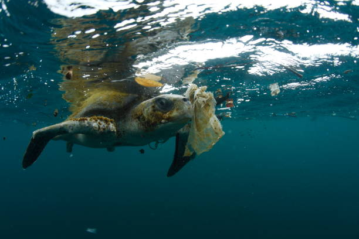

Plastic pollution in oceans has become a serious environmental issue, affecting marine life and ecosystems worldwide. Every year, millions of tons of plastic enter the ocean, disrupting the food chain and harming marine biodiversity. From plastic bottles to microplastics, the problem is widespread and requires immediate action.
The Impact of Plastic Pollution on Oceans

Causes of Plastic Pollution
Plastic waste primarily originates from land-based sources, such as improper waste disposal, littering, and industrial discharge. The major contributors include single-use plastics, such as shopping bags, straws, and packaging materials. Rivers and wind carry these plastics into the ocean, where they accumulate in vast patches like the Great Pacific Garbage Patch.

Effects on Marine Life

Many marine creatures ingest plastic debris, mistaking it for food. This leads to severe health issues, starvation, and death. Sea turtles, for example, often eat plastic bags, confusing them with jellyfish. Birds and fish also suffer from entanglement in plastic waste, which restricts their movement and causes fatal injuries. Microplastics further pose a threat by entering the food chain, ultimately affecting human health.
Solutions & Prevention
To combat plastic pollution, we must take collective action. Governments can implement strict regulations on plastic production and usage, while businesses can adopt sustainable packaging alternatives. Individuals can contribute by reducing plastic consumption, recycling properly, and participating in beach cleanups. Advanced technologies, such as ocean-cleaning drones, also offer innovative solutions to tackle this crisis.